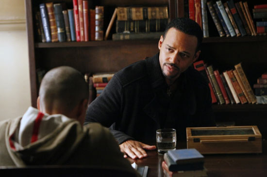

EPISÓDIO 15 – THE DINNER PARTY

STEFAN FALA PARA ELENA SOBRE SEUS DIAS SOMBRIOS — Stefan fala
para Elena histórias sobre seu período sombrio e a pessoa
surpreendente cuja influência mudou tudo. Depois de conseguir
a verdade de Luka, Jonas (estrela convidada Randy Goodwin) revela
seus sentimentos para Bonnie e Jeremy. Tentando pegar Elijah
desprevenido, Damon dá uma festa no jantar para ele, Jenna, Alaric
e Andie (estrela convidada Dawn Olivieri), mas notícias de última
hora transformam o plano de Damon em caos.
Ir para GUIA SEGUNDA TEMPORADA